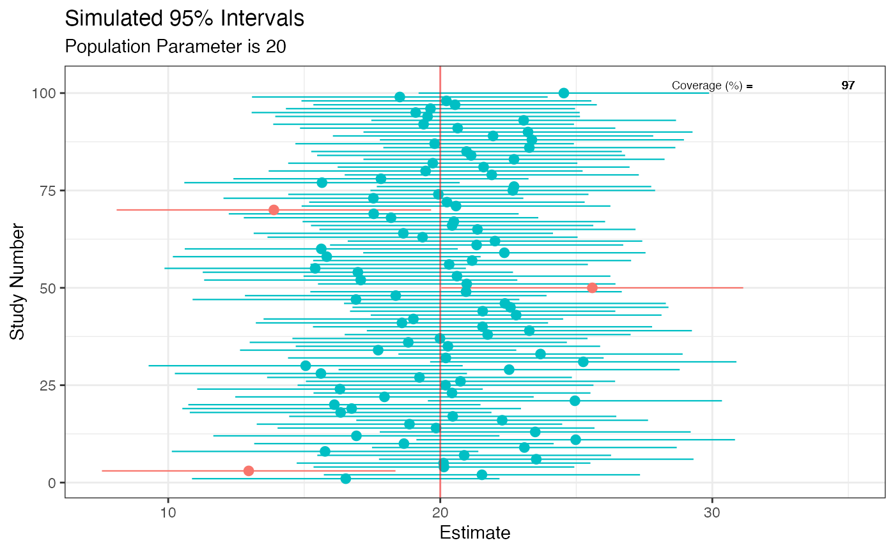
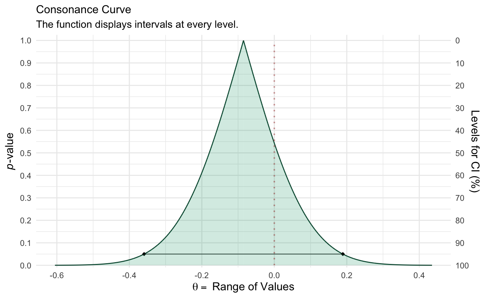
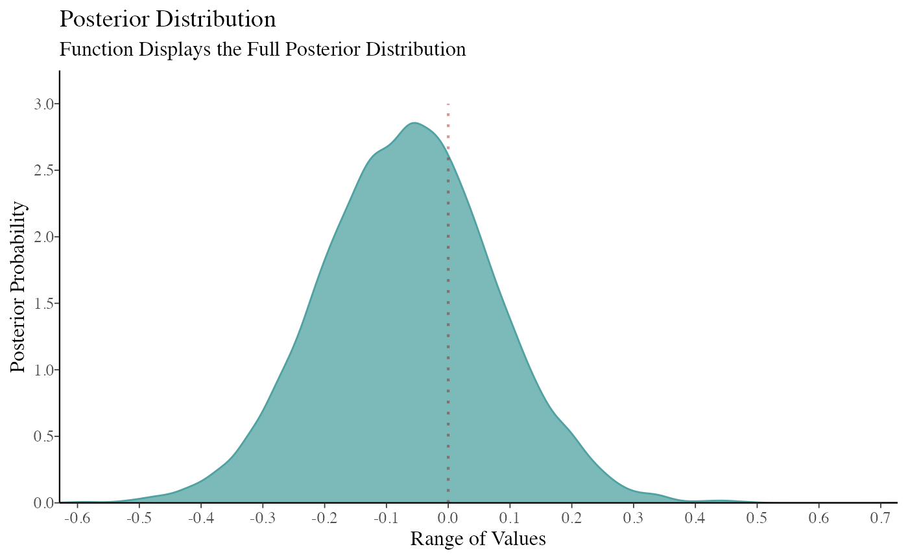
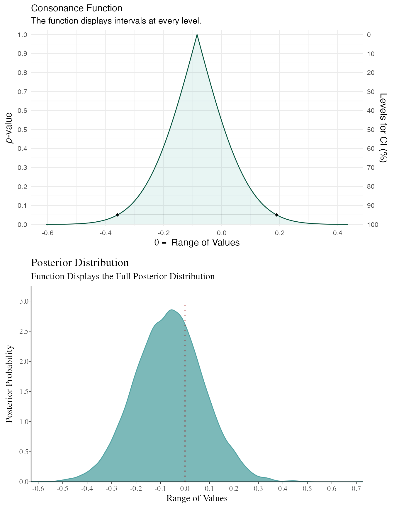
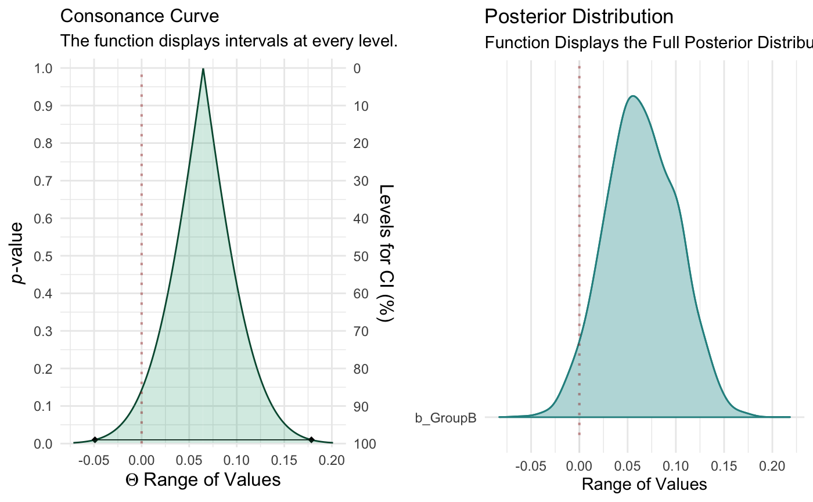
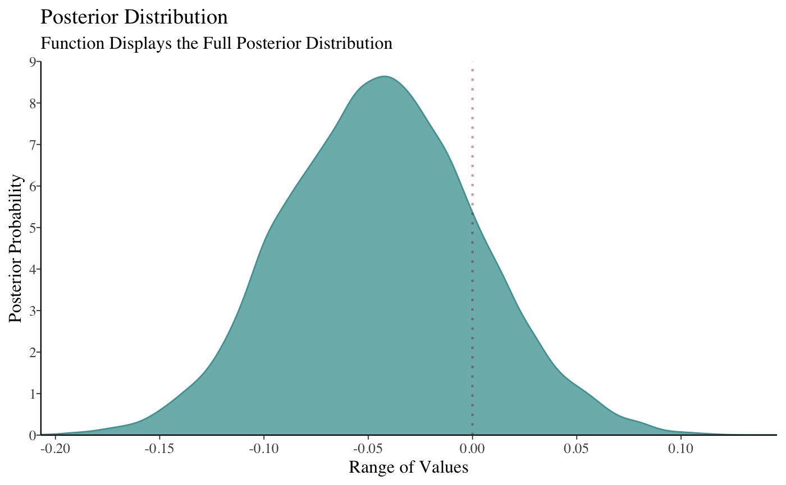
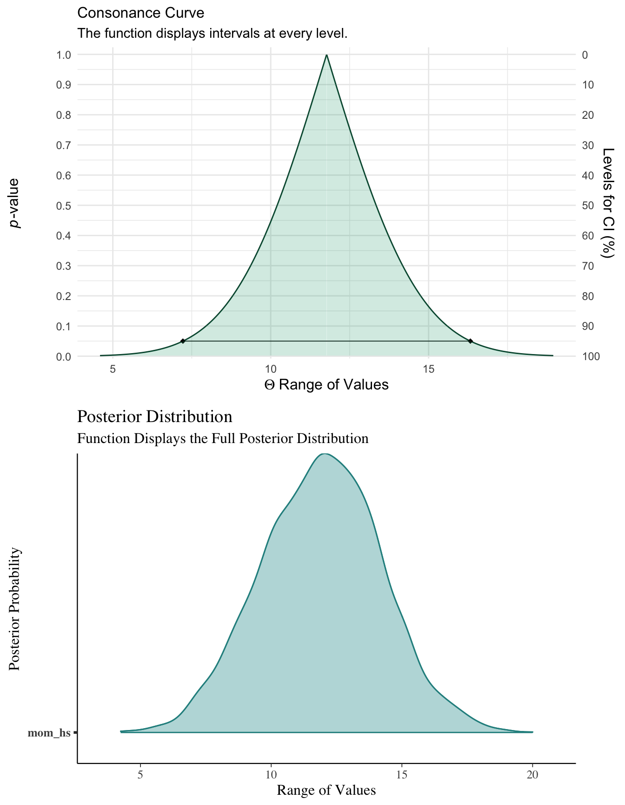
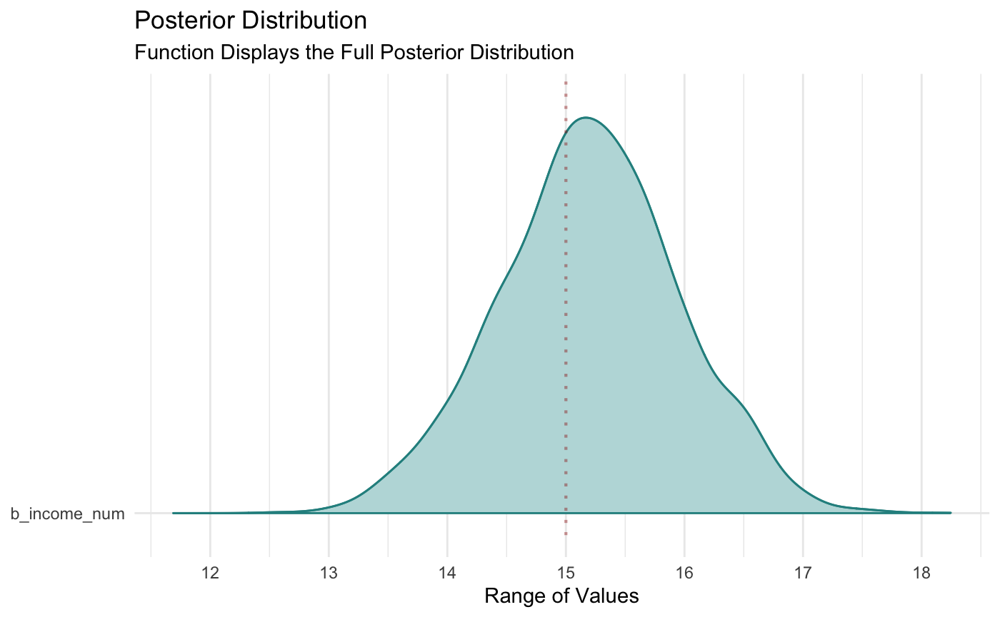
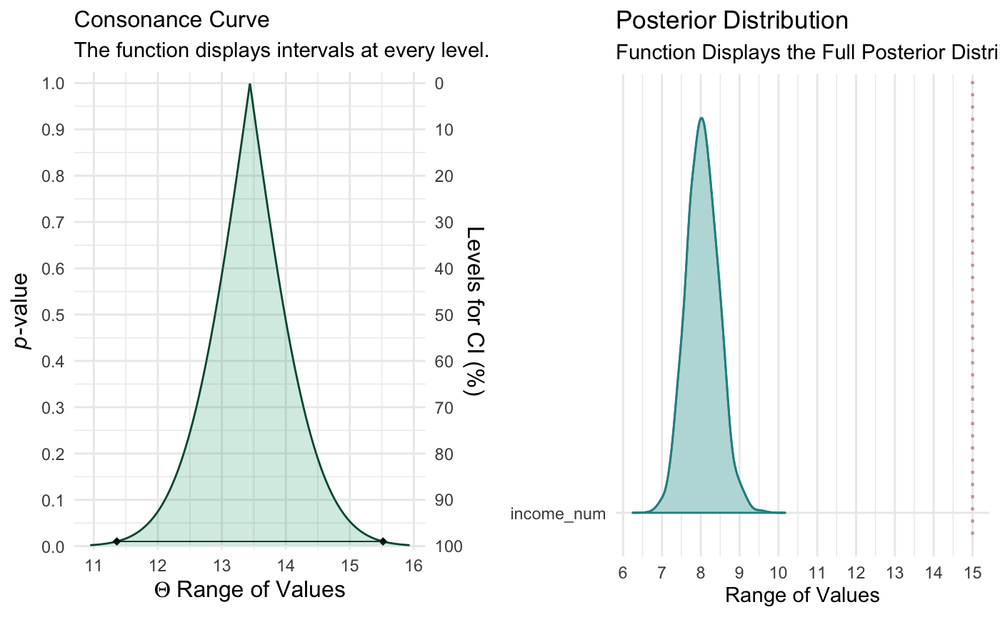

Unlike Bayesian posterior distributions, confidence/consonance functions do not have any distributional properties and also lack the interpretation that should be given to Bayesian posterior intervals. For example, a Bayesian 95% posterior interval has the proper interpretation of having a 95% probability of containing the true value.
This does not apply to 95% frequentist intervals, where the 95% refers to the long run coverage of these intervals containing the true parameter if the study were repeated over and over. Thus, either a 95% frequentist interval contains the true parameter or it does not. In the code below, we simulate some data where the true population parameter is 20 and we know this because we’re the deities of this world. A properly behaving statistical procedure with a set alpha of 0.05 will yield at least 95% intervals in the long run that will include this population parameter of 20. Those that do not are marked in red.
sim <- function() { fake <- data.frame((x <- rnorm(100, 100, 20)), (y <- rnorm(100, 80, 20))) intervals <- t.test(x = x, y = y, data = fake, conf.level = .95)$conf.int[] } set.seed(1031) z <- replicate(100, sim(), simplify = FALSE) df <- data.frame(do.call(rbind, z)) df$studynumber <- (1:length(z)) intrvl.limit <- c("lower.limit", "upper.limit", "studynumber") colnames(df) <- intrvl.limit df$point <- ((df$lower.limit + df$upper.limit) / 2) df$covered <- (df$lower.limit <= 20 & 20 <= df$upper.limit) df$coverageprob <- ((as.numeric(table(df$covered)[2]) / nrow(df) * 100)) library(ggplot2) ggplot(data = df, aes(x = studynumber, y = point, ymin = lower.limit, ymax = upper.limit)) + geom_pointrange(mapping = aes(color = covered), size = .40) + geom_hline(yintercept = 20, lty = 1, color = "red", alpha = 0.5) + coord_flip() + labs( title = "Simulated 95% Intervals", x = "Study Number", y = "Estimate", subtitle = "Population Parameter is 20" ) + theme_bw() + # use a white background theme(legend.position = "none") + annotate( geom = "text", x = 102, y = 30, label = "Coverage (%) =", size = 2.5, color = "black" ) + annotate( geom = "text", x = 102, y = 35, label = df$coverageprob, size = 2.5, color = "black" )

Although the code above demonstrates this, one of the best visualization tools to understand this long-run behavior is the D3.js visualization created by Kristoffer Magnusson, which can be viewed here.
However, despite these differences in interpretation, Bayesian and frequentist intervals often end up converging, especially when there are large amounts of data. They also end up converging when a Bayesian posterior distribution is computed with a flat or weakly informative prior. However, there are several problems with using flat priors, such as giving equal weight to all values in the interval including implausible ones. These sorts of priors should generally be avoided. However, for the sake of this demonstration, we will be using flat priors.
Here, I demonstrate with a simple example how Bayesian posterior distributions and frequentist confidence functions end up converging in some scenarios. For these first few examples, I’ll be using the rstanarm package.1
library(concurve) library(rstan) #> Loading required package: StanHeaders #> rstan (Version 2.19.3, GitRev: 2e1f913d3ca3) #> For execution on a local, multicore CPU with excess RAM we recommend calling #> options(mc.cores = parallel::detectCores()). #> To avoid recompilation of unchanged Stan programs, we recommend calling #> rstan_options(auto_write = TRUE) library(rstanarm) #> Loading required package: Rcpp #> Registered S3 methods overwritten by 'lme4': #> method from #> cooks.distance.influence.merMod car #> influence.merMod car #> dfbeta.influence.merMod car #> dfbetas.influence.merMod car #> rstanarm (Version 2.19.3, packaged: 2020-02-11 05:16:41 UTC) #> - Do not expect the default priors to remain the same in future rstanarm versions. #> Thus, R scripts should specify priors explicitly, even if they are just the defaults. #> - For execution on a local, multicore CPU with excess RAM we recommend calling #> options(mc.cores = parallel::detectCores()) #> - bayesplot theme set to bayesplot::theme_default() #> * Does _not_ affect other ggplot2 plots #> * See ?bayesplot_theme_set for details on theme setting #> #> Attaching package: 'rstanarm' #> The following object is masked from 'package:rstan': #> #> loo library(ggplot2) library(cowplot) #> #> ******************************************************** #> Note: As of version 1.0.0, cowplot does not change the #> default ggplot2 theme anymore. To recover the previous #> behavior, execute: #> theme_set(theme_cowplot()) #> ******************************************************** library(bayesplot) #> This is bayesplot version 1.7.2 #> - Online documentation and vignettes at mc-stan.org/bayesplot #> - bayesplot theme set to bayesplot::theme_default() #> * Does _not_ affect other ggplot2 plots #> * See ?bayesplot_theme_set for details on theme setting library(scales)
We will simulate some data (two variables) from a normal distribution with a location parameter of 0 and scale parameter of 1 (something very simple) and then regress the second variables (GroupB) on the first using the base lm function. We will take the regression coefficient and construct a consonance function for it.
GroupA <- rnorm(50) GroupB <- rnorm(50) RandomData <- data.frame(GroupA, GroupB) model_freq <- lm(GroupA ~ GroupB, data = RandomData)
Now we will do the same using Bayesian methods, but instead of specifying a prior, we will use a flat prior to show the convergence of the posterior with the consonance function.
rstan_options(auto_write = TRUE) # Using flat prior model_bayes <- stan_lm(GroupA ~ GroupB, data = RandomData, prior = NULL, iter = 5000, warmup = 1000, chains = 4 )
Now that we’ve fit the models, we can graph the functions.
randomframe <- curve_gen(model_freq, "GroupB", steps = 10000) (function1 <- ggcurve(type = "c", randomframe[[1]], nullvalue = TRUE))

color_scheme_set("teal") function2 <- mcmc_dens(model_bayes, pars = "GroupB") + ggtitle("Posterior Distribution") + labs(subtitle = "Function Displays the Full Posterior Distribution", x = "Range of Values", y = "Posterior Probability") + scale_y_continuous(breaks = c(0, 0.30, 0.60, 0.90, 1.20, 1.50, 1.80, 2.10, 2.40, 2.70, 3.0)) #> Scale for 'y' is already present. Adding another scale for 'y', which will #> replace the existing scale. (breaks1 <- c(0, 0.30, 0.60, 0.90, 1.20, 1.50, 1.80, 2.10, 2.40, 2.70, 3.0)) #> [1] 0.0 0.3 0.6 0.9 1.2 1.5 1.8 2.1 2.4 2.7 3.0 (adjustment <- function(x) { x / 3 }) #> function(x) { #> x / 3 #> } (labels <- adjustment(breaks1)) #> [1] 0.0 0.1 0.2 0.3 0.4 0.5 0.6 0.7 0.8 0.9 1.0 breaks <- labels labels1 <- labels (function3 <- mcmc_dens(model_bayes, pars = "GroupB") + ggtitle("Posterior Distribution") + labs(subtitle = "Function Displays the Full Posterior Distribution", x = "Range of Values", y = "Posterior Probability") + scale_x_continuous(expand = c(0, 0), breaks = scales::pretty_breaks(n = 10)) + scale_y_continuous(expand = c(0, 0), breaks = waiver(), labels = waiver(), n.breaks = 10, limits = c(0, 3.25)) + yaxis_text(on = TRUE) + yaxis_ticks(on = TRUE) + annotate("segment", x = 0, xend = 0, y = 0, yend = 3, color = "#990000", alpha = 0.4, size = .75, linetype = 3 )) #> Scale for 'x' is already present. Adding another scale for 'x', which will #> replace the existing scale. #> Scale for 'y' is already present. Adding another scale for 'y', which will #> replace the existing scale.

I made some adjustments above to the bayesplot code so that we could more easily compare the consonance distribution to the posterior distribution. We will be using plot_grid() from cowplot to achieve this.
plot_grid(function1, function3, ncol = 1, align = "v")

As you can see, the results end up being very similar. You can likely get very similar results with weakly informative priors normal(0, 100) or with much larger datasets, where the likelihood will end up swamping the prior, though this isn’t always the case.
Here’s another example, but this time the variables we simulate have different location parameters.
GroupA <- rnorm(500, mean = 2) GroupB <- rnorm(500, mean = 1) RandomData <- data.frame(GroupA, GroupB) model_freq <- lm(GroupA ~ GroupB, data = RandomData)
# Using flat prior model_bayes <- stan_lm(GroupA ~ GroupB, data = RandomData, prior = NULL, iter = 5000, warmup = 1000, chains = 4 )
randomframe <- curve_gen(model_freq, "GroupB", steps = 10000) (function1 <- ggcurve(type = "c", randomframe[[1]], nullvalue = TRUE))

color_scheme_set("teal") function2 <- mcmc_dens(model_bayes, pars = "GroupB") + ggtitle("Posterior Distribution") + labs(subtitle = "Function Displays the Full Posterior Distribution", x = "Range of Values", y = "Posterior Probability") + scale_y_continuous(breaks = c(0, 0.30, 0.60, 0.90, 1.20, 1.50, 1.80, 2.10, 2.40, 2.70, 3.0)) #> Scale for 'y' is already present. Adding another scale for 'y', which will #> replace the existing scale. (breaks1 <- c(0, 0.30, 0.60, 0.90, 1.20, 1.50, 1.80, 2.10, 2.40, 2.70, 3.0)) #> [1] 0.0 0.3 0.6 0.9 1.2 1.5 1.8 2.1 2.4 2.7 3.0 (adjustment <- function(x) { x / 3 }) #> function(x) { #> x / 3 #> } (labels <- adjustment(breaks1)) #> [1] 0.0 0.1 0.2 0.3 0.4 0.5 0.6 0.7 0.8 0.9 1.0 breaks <- labels labels1 <- labels (function3 <- mcmc_dens(model_bayes, pars = "GroupB") + ggtitle("Posterior Distribution") + labs(subtitle = "Function Displays the Full Posterior Distribution", x = "Range of Values", y = "Posterior Probability") + scale_x_continuous(expand = c(0, 0), breaks = scales::pretty_breaks(n = 10)) + scale_y_continuous(expand = c(0, 0), breaks = waiver(), labels = waiver(), n.breaks = 10, limits = c(0, 9)) + yaxis_text(on = TRUE) + yaxis_ticks(on = TRUE) + annotate("segment", x = 0, xend = 0, y = 0, yend = 9, color = "#990000", alpha = 0.4, size = .75, linetype = 3 )) #> Scale for 'x' is already present. Adding another scale for 'x', which will #> replace the existing scale. #> Scale for 'y' is already present. Adding another scale for 'y', which will #> replace the existing scale.

plot_grid(function1, function3, ncol = 1, align = "v")

Here’s another dataset, however, here we’re not generating random numbers.
data(kidiq) # flat prior post1 <- stan_lm(kid_score ~ mom_hs, data = kidiq, prior = NULL, seed = 12345 )
post2 <- lm(kid_score ~ mom_hs, data = kidiq) df3 <- curve_gen(post2, "mom_hs") (function99 <- ggcurve(df3[[1]]))

summary(post1) #> #> Model Info: #> function: stan_lm #> family: gaussian [identity] #> formula: kid_score ~ mom_hs #> algorithm: sampling #> sample: 4000 (posterior sample size) #> priors: see help('prior_summary') #> observations: 434 #> predictors: 2 #> #> Estimates: #> mean sd 10% 50% 90% #> (Intercept) 77.4 2.0 74.8 77.4 80.1 #> mom_hs 11.9 2.3 8.9 12.0 14.8 #> sigma 19.9 0.7 19.0 19.8 20.7 #> log-fit_ratio -0.2 0.0 -0.2 -0.2 -0.1 #> R2 0.1 0.0 0.0 0.1 0.1 #> #> Fit Diagnostics: #> mean sd 10% 50% 90% #> mean_PPD 86.7 1.3 85.0 86.7 88.4 #> #> The mean_ppd is the sample average posterior predictive distribution of the outcome variable (for details see help('summary.stanreg')). #> #> MCMC diagnostics #> mcse Rhat n_eff #> (Intercept) 0.1 1.0 1250 #> mom_hs 0.1 1.0 1144 #> sigma 0.0 1.0 1987 #> log-fit_ratio 0.0 1.0 1272 #> R2 0.0 1.0 1100 #> mean_PPD 0.0 1.0 3958 #> log-posterior 0.0 1.0 1382 #> #> For each parameter, mcse is Monte Carlo standard error, n_eff is a crude measure of effective sample size, and Rhat is the potential scale reduction factor on split chains (at convergence Rhat=1). color_scheme_set("teal") (function101 <- mcmc_areas(post1, pars = "mom_hs", point_est = "none", prob = 1, prob_outer = 1, area_method = "equal height") + ggtitle("Posterior Distribution") + labs(subtitle = "Function Displays the Full Posterior Distribution", x = "Range of Values", y = "Posterior Probability") + yaxis_text(on = TRUE) + yaxis_ticks(on = TRUE))

cowplot::plot_grid(function99, function101, ncol = 1, align = "v")

Practically the same.
Session info
#> R version 4.0.0 (2020-04-24)
#> Platform: x86_64-apple-darwin17.0 (64-bit)
#> Running under: macOS Catalina 10.15.5
#>
#> Matrix products: default
#> BLAS: /Library/Frameworks/R.framework/Versions/4.0/Resources/lib/libRblas.dylib
#> LAPACK: /Library/Frameworks/R.framework/Versions/4.0/Resources/lib/libRlapack.dylib
#>
#> locale:
#> [1] en_US.UTF-8/en_US.UTF-8/en_US.UTF-8/C/en_US.UTF-8/en_US.UTF-8
#>
#> attached base packages:
#> [1] stats graphics grDevices utils datasets methods base
#>
#> other attached packages:
#> [1] scales_1.1.1 bayesplot_1.7.2 cowplot_1.0.0
#> [4] rstanarm_2.19.3 Rcpp_1.0.4.9 rstan_2.19.3
#> [7] StanHeaders_2.21.0-5 concurve_2.6.0 ggplot2_3.3.1
#>
#> loaded via a namespace (and not attached):
#> [1] minqa_1.2.4 colorspace_1.4-1 ggsignif_0.6.0
#> [4] ellipsis_0.3.1 rio_0.5.16 ggridges_0.5.2
#> [7] rsconnect_0.8.16 rprojroot_1.3-2 flextable_0.5.10
#> [10] markdown_1.1 base64enc_0.1-3 fs_1.4.1
#> [13] rstudioapi_0.11 ggpubr_0.3.0 farver_2.0.3
#> [16] DT_0.13 fansi_0.4.1 xml2_1.3.2
#> [19] codetools_0.2-16 splines_4.0.0 knitr_1.28
#> [22] shinythemes_1.1.2 nloptr_1.2.2.1 broom_0.5.6
#> [25] km.ci_0.5-2 bcaboot_0.2-1 shiny_1.4.0.2
#> [28] compiler_4.0.0 backports_1.1.7 fastmap_1.0.1
#> [31] assertthat_0.2.1 Matrix_1.2-18 cli_2.0.2
#> [34] later_1.1.0.1 htmltools_0.4.0 prettyunits_1.1.1
#> [37] tools_4.0.0 igraph_1.2.5 gtable_0.3.0
#> [40] glue_1.4.1 reshape2_1.4.4 dplyr_1.0.0
#> [43] carData_3.0-4 cellranger_1.1.0 pkgdown_1.5.1
#> [46] vctrs_0.3.1 nlme_3.1-148 crosstalk_1.1.0.1
#> [49] xfun_0.14 stringr_1.4.0 ps_1.3.3
#> [52] lme4_1.1-23 openxlsx_4.1.5 miniUI_0.1.1.1
#> [55] mime_0.9 lifecycle_0.2.0 gtools_3.8.2
#> [58] statmod_1.4.34 rstatix_0.5.0 MASS_7.3-51.6
#> [61] zoo_1.8-8 colourpicker_1.0 promises_1.1.1
#> [64] hms_0.5.3 ProfileLikelihood_1.1 parallel_4.0.0
#> [67] inline_0.3.15 shinystan_2.5.0 metafor_2.4-0
#> [70] yaml_2.2.1 curl_4.3 memoise_1.1.0
#> [73] gridExtra_2.3 KMsurv_0.1-5 gdtools_0.2.2
#> [76] loo_2.2.0 stringi_1.4.6 dygraphs_1.1.1.6
#> [79] desc_1.2.0 boot_1.3-25 pkgbuild_1.0.8
#> [82] zip_2.0.4 rlang_0.4.6 pkgconfig_2.0.3
#> [85] systemfonts_0.2.2 matrixStats_0.56.0 evaluate_0.14
#> [88] lattice_0.20-41 purrr_0.3.4 rstantools_2.1.0
#> [91] htmlwidgets_1.5.1 labeling_0.3 tidyselect_1.1.0
#> [94] processx_3.4.2 plyr_1.8.6 magrittr_1.5
#> [97] R6_2.4.1 generics_0.0.2 pillar_1.4.4
#> [100] haven_2.3.1 foreign_0.8-80 withr_2.2.0
#> [103] xts_0.12-0 survival_3.1-12 abind_1.4-5
#> [106] tibble_3.0.1 crayon_1.3.4 car_3.0-8
#> [109] survMisc_0.5.5 uuid_0.1-4 rmarkdown_2.2
#> [112] officer_0.3.11 grid_4.0.0 readxl_1.3.1
#> [115] data.table_1.12.8 callr_3.4.3 threejs_0.3.3
#> [118] forcats_0.5.0 digest_0.6.25 pbmcapply_1.5.0
#> [121] xtable_1.8-4 tidyr_1.1.0 httpuv_1.5.4
#> [124] RcppParallel_5.0.1 stats4_4.0.0 munsell_0.5.0
#> [127] survminer_0.4.7 shinyjs_1.11. Goodrich B, Gabry J, Ali I, Brilleman S. Rstanarm: Bayesian Applied Regression Modeling via Stan.; 2020. https://mc-stan.org/rstanarm.